Kiev diz ter usado drones e mísseis próprios; a AP não verificou os vídeos. Mísseis russos atingiram Kiev na mesma noite. No estreito de Ormuz, o Irã relata mais navios atingidos por minas, sem verificação independente. Pág. 5.
No Senado, a sessão de terça foi suspensa por volta das 18h. Na Câmara, o relator, o deputado cearense Mauro Benevides Filho, promete manter o texto; o governo quer sancionar na próxima semana. Págs. 2 e 4.
Lesão de pele ou mucosa com febre ou ínguas: pense em mpox, notifique e use precaução de contato e gotículas. Pág. 3.
💊 PAV e bundle · ITU complicada · derrame pleural · QT longo · curvas do ventilador: a regra dos 7 dias de antibiótico. Págs. 8–10.
💰 Prefixado perto de 15% e o falso leilão (20–21) · 😂 Tirinhas (22–23) · 📜 O colírio de mil anos e Jonestown (24–25) · 🏛️ Humildade (26–27) · ⚖️ Cochilo de 10 min e superlua (28–29).
Adiamento. O presidente do Senado, Davi Alcolumbre (União-AP), adiou para quarta (18), às 16h, os destaques ao PLP 299/2026, a pedido do relator, Eduardo Braga (MDB-AM), que busca acordo. Segundo o Conjur, os governistas não tinham votos garantidos para derrubá-los.
O que está em jogo. O texto-base passou em 12/11 por 45 a 31. Os destaques tratam do adiamento de R$ 12 bi da Lei Kandir a estados e municípios, do teto de R$ 3 bi anuais nas compensações previdenciárias e da restrição a créditos tributários de empresas. O 4º ponto tem descrições divergentes.
Câmara. Hugo Motta (Republicanos-PB) escolheu como relator Mauro Benevides Filho (União-CE). Ele quer aprovar o texto sem mudanças e diz que não há corte em BPC nem Bolsa Família. São precisos 257 votos. O ministro José Guimarães anunciou acordo para votar assim que o texto chegar.
Base dividida. Deputados do PT, PSOL e PCdoB temem efeitos sobre o salário mínimo e os pisos de saúde e educação; o governo diz que as regras constitucionais ficam preservadas.
Equipe. Lula discutiu na terça o 4º mandato com Camilo Santana (PT-CE), Rafael Fonteles (PT-PI) e Rui Costa. Nenhum ministro foi anunciado.
Escala 5x2. Lula assina na quinta (19), às 9h, o decreto que regula a escala, disse o ministro Luiz Marinho. Pela Emenda 141, o limite cai para 42 horas semanais em 16/12; sem acordo coletivo, valem até 8h24 em cinco dias.
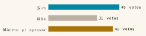
| Hoje, 16h | Senado vota os 4 destaques |
| Depois | Câmara: 257 votos |
| Se mudar | Volta ao Senado |
| Próx. semana | Sanção, meta do governo |
Aprovou a MP 1398, com R$ 300 milhões para a defesa civil em áreas atingidas por desastres; segue ao Senado. Motta disse que pautas da bancada negra têm prioridade na semana do dia 20.
Governo, base e oposição aparecem com as próprias posições, atribuídas. O jornal não toma partido.
Mpox. Sobral tem três casos confirmados, os dois primeiros no início de novembro, segundo dados da Sesa no IntegraSUS. Alcântaras, na região, confirmou na segunda (16) o primeiro caso: o paciente foi internado em 13/11 no hospital municipal e está estável, segundo a secretaria local. A vigilância começou notificação, coleta de amostras e orientação de isolamento.
No estado. O Ceará chegou a 85 confirmados (dado de 14/11), contra 40 em 6/11 e 78 em 11/11. Foram 223 notificações e 84 descartes. Em 12/11, dos 78 casos, 76 eram homens, a maioria de 20 a 39 anos; as notificações semanais tinham passado de 4 para 52 em cerca de um mês.
Chuva. Entre as 7h de segunda e as 7h de terça, a Funceme registrou chuva em 69 municípios (o mesmo texto do O Povo cita 46 em outro trecho). Cinco passaram de 100 mm, todos no Noroeste: Varjota teve 148 mm. Para quarta e quinta, a previsão é de poucas nuvens, mais calor e rajadas de 25 a 45 km/h no litoral e na serra.
El Niño. O Inmet, com base na NOAA, prevê o pico entre novembro e janeiro, com anomalia perto de 2,5 °C, e 61% de chance de neutralidade entre abril e junho de 2027. Para partes do Nordeste, o cenário favorece chuva abaixo da média até janeiro. A previsão da quadra chuvosa sai em janeiro.
Contexto Cearenses em Brasília. O deputado Mauro Benevides Filho relata o ajuste fiscal na Câmara, e o senador Camilo Santana esteve com Lula na terça. Pág. 2.
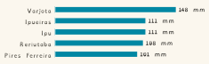
| Sex 20 | Feriado nacional da Consciência Negra |
| Dom 22 | Criciúma × Fortaleza, 16h, ida do acesso |
| 28/11–8/12 | Festa de N. Sra. da Conceição, na Sé |
Mancha, bolha ou ferida na pele ou nos genitais, mesmo sem febre. Até a avaliação: lesões cobertas, sem contato íntimo e sem dividir objetos. A incubação vai de 3 a 16 dias, até 21.
A Funceme chama de pré-estação as chuvas de dezembro e janeiro; a quadra chuvosa vai de fevereiro a maio. Antes disso, podem ocorrer pancadas fortes e isoladas.
Câmbio. O dólar à vista fechou a R$ 5,7819 (+0,08%), depois de oscilar entre R$ 5,76 e R$ 5,81. É a quarta alta seguida: desde quarta (11), quando valia R$ 5,56, subiu cerca de 4%. Para analistas, houve realização de lucros após a disparada de segunda, sem descartar nova pressão.
Bolsa. O Ibovespa subiu 0,31%, a 169.817 pontos, com giro de cerca de R$ 27 bilhões, abaixo da média de 2026. Hapvida liderou as altas (+11%); Natura, as quedas (−3,7%).
Juros. As taxas futuras recuaram: o DI para janeiro de 2029 foi de 15,02% a 14,80%; o de 2031, de 15,26% a 15,04%. Pesaram as reuniões de Lula com a equipe econômica e líderes do PT. O ministro da Fazenda, Dario Durigan, disse não haver "solução mágica" para as contas. A Selic está em 13,75%.
Exterior. Em Nova York, o Dow Jones caiu 1,67%, o S&P 500, 1,06%, e a Nasdaq, 0,74%. Após o fechamento, a Nvidia divulgou receita de US$ 115,8 bi no trimestre, alta de 103% em um ano, e projetou US$ 130 bi para o próximo. Pág. 11.
Fed. Os juros americanos estão em 3,75%–4%. O diretor Christopher Waller defende alta de 0,5 ponto em 9/12; a maioria do mercado espera 0,25. Petróleo: o Brent subiu com novos relatos de navios atingidos em Ormuz. Pág. 5.
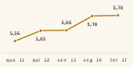
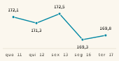
Dólar em alta e estreia de ação famosa geram "dica quente" e medo de ficar de fora. Regra das 72 h: anote a vontade, espere três dias e decida pelo seu plano. Retorno garantido é sinal de golpe. A Anthropic define hoje o preço da ação na abertura de capital; o jornal é produzido com o Claude, da Anthropic, e não recomenda compra. Isto não é recomendação de investimento.
| 8h | IGP-M, 2ª prévia (FGV) |
| 9h | Pnad Contínua trimestral (IBGE) |
| 16h | Senado: destaques · ata do Fed |
| Sex 20 | Feriado, sem pregão |
É a taxa dos contratos de juros futuros da B3. Quando sobe, o mercado espera Selic mais alta ou cobra mais pelo risco. Ela influencia financiamentos e o Tesouro prefixado.
Kerch. Zelensky anunciou na terça (17) o fim de uma operação em sete etapas contra a ponte. Segundo o Estado-Maior ucraniano, um arco e um vão da pista rodoviária desabaram; a ferrovia ficou de pé, com um arco danificado. Kiev diz ter usado drones de longo alcance e mísseis Neptune e Flamingo, de fabricação própria. O Kremlin afirmou que a ponte será restaurada; o governador instalado por Moscou suspendeu o tráfego de veículos, e os trens voltaram à tarde.
Kiev. Na mesma noite, sete mísseis balísticos russos atingiram a capital, que fechou as pontes Norte e Sul; ao menos duas pessoas morreram. Em Zaporizhzhia, dois mortos e 18 feridos. Moscou diz ter derrubado 1.441 drones ucranianos na noite de segunda. Witkoff e Kushner devem encontrar ucranianos e europeus em Berlim na quinta.
Ormuz. A Guarda Revolucionária disse na terça que um superpetroleiro com mais de 2 milhões de barris e um navio de gás bateram em minas; a Marinha regular relatou outro petroleiro danificado a leste do estreito. As contagens variam entre comunicados, os navios não foram identificados e não há verificação independente. A agência britânica UKMTO registrou dois ataques com fogo na casa de máquinas.
Ásia. Em Manila, a cúpula Asean-EUA adotou princípios contra golpes on-line, que causaram perdas de US$ 88 bi a US$ 114 bi na região em 2025. Na 1ª reunião do Quad com Trump, EUA, Índia, Japão e Austrália acertaram proteger cadeias de minerais críticos. Em Shenzhen, a Casa Branca diz que o encontro a três, o primeiro, tratará de armas nucleares, Irã e Ucrânia.
O estreito de Kerch liga o mar de Azov ao mar Negro. A ponte, aberta em 2018, quatro anos após a anexação da Crimeia pela Rússia, não reconhecida pela maioria dos países, é a principal ligação direta entre a península e o território russo.
| Qua 18 | APEC abre em Shenzhen |
| Qui 19 | Trump-Xi-Putin |
| Qui 19 | Witkoff e Kushner em Berlim |
Neptune e Flamingo: mísseis de fabricação ucraniana. UKMTO: centro britânico que monitora a navegação na região. Quad: grupo de EUA, Índia, Japão e Austrália.
Kiev descreve o dano; Moscou não detalha. Quem afirma, quando e com que prova: guarde as três perguntas até haver confirmação independente.
Respostas: Mickey · OAB · MAVEN.
Dia Mundial da DPOC (p.7) · começa a Semana dos Antimicrobianos (p.7 e 24) · Dia Nacional do Conselheiro Tutelar · Dia Nacional de Omã · proclamação da Letônia.
O Aleijadinho seguiu esculpindo por anos com uma doença que deformou mãos e pés. Hanseníase, porfiria e outras hipóteses seguem em debate; nenhuma foi comprovada.
Antes de 1883, cada cidade acertava o relógio pelo Sol. Os trens impuseram 4 fusos, no "dia dos dois meios-dias". A lei dos EUA só veio em 1918; o Brasil adotou fusos em 1913.
DPOC. O tema de 2026 da GOLD, a iniciativa global para a doença, é "Diagnóstico e tratamento precoces para uma vida melhor". A DPOC é comum, evitável e tratável, mas costuma ser descoberta tarde. Fumaça de lenha e poluição também causam a doença, inclusive em jovens. Quem confirma é a espirometria.
Previsto GOLD 2027. A versão final sai hoje, segundo a GOLD. Já se sabe: tomografia de tórax ao menos uma vez na avaliação inicial, onde houver; grupo A começa com antimuscarínico de longa ação (LAMA); NT-proBNP é o marcador preferido se há suspeita de cardiopatia; betabloqueador não é contraindicado na fibrilação atrial.
16/11 Resistência. De 183 países avaliados pela OMS neste ano, quase 9 em 10 têm plano nacional contra a resistência antimicrobiana, ante 4 em 10 em 2017; só 42 o financiam, executam e monitoram. Em 2023, 1 em cada 6 infecções bacterianas confirmadas em laboratório resistiu ao antibiótico usual. A OMS lançou duas ferramentas de diagnóstico. A semana vai até 24/11.
16/11 Covid. O Ministério da Saúde liberou mais de 1,4 milhão de doses extras para dez estados, após alta de casos leves; o Ceará não está na lista. Em 2026, a SRAG por covid caiu cerca de 62% ante 2025. Prioridade: 60+ a cada seis meses, imunocomprometidos, gestantes e crianças pequenas.
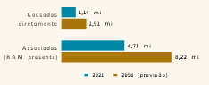
Contexto Até meados de outubro, o estado somava cerca de 15 mil casos confirmados em 2026, quase 4 vezes 2025 (O Povo, 18/10). Em agosto, a Sesa já listava Sobral entre os municípios com transmissão ativa sustentada. O DENV-2 predomina; o DENV-3 voltou e preocupa, porque a maioria não tem imunidade.
23/10 A Anvisa abriu, até 20/12, a Avaliação Nacional dos Programas de Gerenciamento de Antimicrobianos em Hospitais 2026, para hospitais públicos, privados, filantrópicos e militares. Preencha em equipe, com farmácia, infectologia e controle de infecção. Em 2024, 1.453 hospitais responderam, e pouco mais da metade tinha programa implantado. Conteúdo educativo. Siga o protocolo institucional.
| Passo | O que fazer | ⚠️ Pegadinha de prova |
|---|---|---|
| 1. Bundle | Cabeceira a 30–45°, menos sedação com despertar diário + TRE, escovação dentária diária, mobilização e dieta enteral precoces, circuito trocado só se sujo ou com defeito. | Clorexidina oral e profilaxia de úlcera de estresse não previnem PAV (SHEA 2022). |
| 2. Tubo e cuff | Aspiração subglótica se a VM deve passar de 48–72 h. Cuff entre 20 e 30 cmH₂O: abaixo de 20 a secreção desce; acima de 30, isquemia da traqueia. | Medir o cuff toda hora ou com aparelho automático não reduziu PAV. |
| 3. Diagnosticar | Mais de 48 h de VM + infiltrado novo ou progressivo + febre, leucocitose, secreção purulenta ou piora da oxigenação. Aspirado traqueal semiquantitativo antes do antibiótico. | CPIS, PCR e procalcitonina não decidem iniciar o antibiótico. |
| 4. Empírico | β-lactâmico antipseudomonas para todos. MRSA se antibiótico IV em 90 dias ou MRSA > 10–20% dos S. aureus da UTI. Duas drogas antipseudomonas se houver risco de multirresistência. | Risco: antibiótico IV em 90 dias, choque séptico, SDRA antes da PAV, ≥ 5 dias de internação, diálise aguda. |
| 5. Parar | Cultura em 48–72 h: descalonar para o mais estreito. Duração de 7 dias. Procalcitonina em queda + melhora clínica ajudam a suspender. | Não fermentador recorreu mais com 8 dias (40,6% × 25,4%), sem pior mortalidade. |
Conteúdo educativo. Siga o protocolo institucional.
Mulher de 58 anos, 6 dias de VM após AVC. Febre de 38,6 °C, secreção purulenta, infiltrado novo na base direita, P/F caiu de 280 para 180. Usou ceftriaxona IV há 1 mês. Sem choque.
Conduta: aspirado traqueal e hemoculturas; antibiótico IV em 90 dias = risco de multirresistência e de MRSA: dois antipseudomonas + anti-MRSA. Cultura com Klebsiella sensível: fica só o β-lactâmico, total de 7 dias. POCUS com derrame septado (p.10).
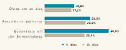
Não serve como única droga antipseudomonas na PAV (IDSA/ATS 2016). Ele entra como segunda droga e sai assim que o antibiograma permitir.
Começa a semana da OMS contra a resistência, tema "One Health, one action: Prevent AMR now". Também é Dia Mundial da DPOC.
| Passo | O que fazer | ⚠️ Pegadinha de prova |
|---|---|---|
| 1. Tem sintoma? | Bacteriúria assintomática não se rastreia nem se trata, nem no idoso, no diabético ou no sondado. Exceções: gestante e antes de procedimento urológico com sangramento de mucosa. | Urina turva, com cheiro ou piúria isolada não são sintomas. Delirium sem sinal urinário: procure outra causa. |
| 2. Classificar | Cistite: só bexiga (disúria, urgência, polaciúria). Complicada: febre, calafrios, dor lombar ou punho-percussão, obstrução, cateter, nefrostomia ou duplo J. A pielonefrite entra aqui. | Ser homem, diabético ou imunossuprimido não torna a ITU complicada por si só. |
| 3. Colher e escolher | Urocultura antes do antibiótico; hemoculturas se sepse. Com ou sem sepse: cefalosporina de 3ª/4ª geração, piperacilina-tazobactam ou quinolona. Na sepse, também carbapenêmico; sem sepse, poupe o carbapenêmico. | Evite a classe com isolado resistente prévio e a quinolona usada nos últimos 12 meses. Nitrofurantoína não serve. |
| 4. Cateter | Retire se não há indicação. Se está há > 2 semanas e ainda é necessário, troque e colha a urocultura do cateter novo. | Urina da bolsa coletora não vale para cultura. |
| 5. Duração | Melhorou: quinolona 5–7 dias ou outra classe 7 dias, em vez de 10–14. Bacteremia por Gram-negativo: 7 dias. Passe para via oral quando estável. | Febre com suspeita de prostatite aguda: 10–14 dias podem ser necessários (evidência fraca). |
Conteúdo educativo. Siga o protocolo institucional.
Homem de 74 anos, sonda vesical há 3 semanas por retenção, usou ciprofloxacino há 6 meses. Febre de 38,8 °C, calafrios, PA 100/60, lactato 2,4.
Conduta: hemoculturas, troca da sonda e urocultura da nova; sem quinolona (uso em 12 meses): cefalosporina de 3ª/4ª geração ou piperacilina-tazobactam, pelo perfil local. E. coli sensível e melhora: via oral, total de 7 dias.
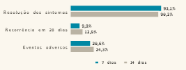
O estudo do gráfico excluiu homens febris. Para eles, a diretriz de 2025 não tem regra própria: vale a geral, e 10–14 dias se há suspeita de prostatite.
Melhorou, tolera dieta e há opção oral ativa: troque a via, inclusive na bacteremia. Menos flebite, menos dias de cateter venoso.
Transdutor na linha axilar posterior, acima do diafragma. O derrame é o espaço anecoico entre as pleuras, às vezes com o pulmão colapsado boiando. Sinal da coluna: o ar esconde a coluna acima do diafragma; com líquido, os corpos vertebrais "sobem" (sensibilidade de 73,7% e especificidade de 92,9%). Quadrilátero: líquido limitado pela linha pleural, costelas e linha do pulmão. Sinusoide no modo M: o pulmão se aproxima da pleura na inspiração.
⚠️ Pegadinha: anecoico pode ser transudato ou exsudato; septado, complexo ou ecogênico homogêneo é exsudato. Na febre, puncione: pode ser parapneumônico complicado ou empiema.
📏 V (mL) ≈ 20 × Sep (mm), a maior distância entre as pleuras na base, em decúbito. Punção segura com ≥ 15 mm em 3 espaços.
Corrija o QT pela frequência; acima de 85 bpm, Bazett superestima: prefira Fridericia. Longo: > 470 ms no homem e > 480 ms na mulher. Risco de torsades: QTc > 500 ms ou alta ≥ 60 ms após um remédio. Adquirido: macrolídeos, quinolonas e azólicos, somados a K e Mg baixos, bradicardia e IC. Congênito: LQT1 no exercício, LQT2 com susto ou barulho, LQT3 no sono; betabloqueador não seletivo (nadolol ou propranolol).
⚠️ Pegadinha: torsades pede sulfato de magnésio 2 g IV mesmo com Mg normal, K entre 4,5 e 5,0 e retirada da droga; sustentada ou instável, desfibrile. Amiodarona alonga ainda mais o QT.
🧮 Bazett: QTc = QT ÷ √RR · Fridericia: QTc = QT ÷ ∛RR, com RR em segundos.
VCV: fluxo inspiratório quadrado e pressão que sobe até o pico. PCV: pressão quadrada e fluxo desacelerado. Fluxo expiratório que não volta a zero antes do próximo ciclo = auto-PEEP: reduza FR, volume ou tempo inspiratório e trate o broncoespasmo. Serrilhado no fluxo = secreção ou água no circuito: aspire e esvazie o circuito. Em VCV, curva de pressão côncava na subida = fome de fluxo.
🫧 Serrilhado na tela: 82% × 29,6% dos pacientes com e sem secreção retida; ausência dele torna a secreção pouco provável.
Coluna visível acima do diafragma? Pense em derrame.
Torsades com Mg normal? Sulfato de Mg 2 g IV mesmo assim.
Fluxo expiratório não zera? Auto-PEEP.
24 h Nvidia. No trimestre encerrado em 25/10, a receita foi de US$ 115,8 bilhões, alta de 103% em um ano, contra cerca de US$ 109 bilhões esperados pelo mercado. O data center rendeu US$ 107,6 bilhões; a nova plataforma Vera Rubin vendeu perto de US$ 20 bilhões no primeiro trimestre de entregas. A previsão para o 4º trimestre fiscal é de US$ 130 bilhões, com margem de 3%, acima dos US$ 125 bilhões esperados.
Reação. A ação fechou o pregão regular em queda de 0,4% e subiu entre 3% e 4% no after-market, segundo Yahoo Finance e TechCrunch. O conselho disse que não pretende reconduzir Jensen Huang, que renunciou em 12/11, e não comentou as circunstâncias da saída.
Hoje Anthropic. O livro de pedidos fechou ontem às 18h de Brasília. Segundo a Bloomberg, a procura chegou perto de sete vezes as 825 milhões de ações, e o preço deve ficar no topo da faixa de US$ 70–78 ou acima; WSJ e CNBC falam em mais de US$ 80. A US$ 78, a empresa valeria US$ 1,4 trilhão. A estreia na Nasdaq (ANT) segue prevista para quinta.
24 h Ignite. A Microsoft apresentou o Autopilot, agente com identidade e memória próprias acionado por @menção no Teams, e o Copilot Code, que cria apps a partir de texto. Quase tudo está em prévia.
24 h Segurança. Código malicioso inserido num serviço da Optimizely, plataforma de testes de sites, rodou em 178 sites na segunda (16), entre eles Zoom e BBC, segundo o pesquisador Scott Helme. Trocava endereços de carteiras de cripto e capturava dados digitados. A empresa diz ter bloqueado a falha.
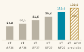
| Hoje | Preço da Anthropic (noite) |
| Qui 19 | ANT estreia na Nasdaq |
| Sex 20 | Fim do Ignite |
O site é o verdadeiro, mas um serviço contratado por ele foi adulterado. Defesa: navegador e sistema atualizados e, em cripto, conferir o endereço de destino no app antes de enviar.
O varejo brasileiro não compra na oferta. "Ações da Anthropic" oferecidas por mensagem são golpe. Regra das 72 h; isto não é recomendação de investimento.
Seleção. Na terça (17), em Singapura, o Brasil venceu por 7 a 0 no último jogo do ano. Foi a maior goleada desde o 8 a 0 sobre a China, em 2012, no Recife. Vini Jr. marcou três vezes no primeiro tempo; Endrick, Estevão, Rayan e Allan completaram. Houve minuto de silêncio por Dino Sani, campeão do mundo em 1958, morto no domingo (15), aos 94 anos. Próximo jogo: março de 2027.
Fla × Athletico-PR, hoje. No Maracanã, com transmissão do Premiere. O Flamengo está invicto há 11 jogos e tem de volta Danilo, Alex Sandro e Paquetá, recuperados de lesão. O Athletico, 5º com 54 pontos, não vence há quatro rodadas. Não terá Kevin Viveros, artilheiro do Brasileirão com 21 gols, suspenso por três jogos pelo STJD, nem Dantas, que levou o terceiro amarelo.
A conta do título. Se vencer hoje e no sábado (21), às 16h30, no Nubank Parque, o Flamengo chega a 82 pontos. O Palmeiras poderia, no máximo, empatar em pontos, mas teria menos vitórias, que é o 1º critério de desempate. O ValorFinal dá 84,8% de chance de título ao Fla. Oito rubro-negros estão pendurados para o confronto direto.
Palmeiras. Visita o Cruzeiro, 3º com 60, no Mineirão. Vagas: Cruzeiro e Fluminense (57) fecham o G4; Athletico-PR e Bahia (53) perseguem.
A degola. A Chapecoense, com 21 pontos, já caiu. O Remo, com 29, precisa de quase tudo. Corinthians e Grêmio (37) estão a um ponto de Vitória e Internacional (38). Entre os quatro, o Grêmio tem o maior risco no modelo: 55,1%.
| # | Time | P | J | SG |
|---|---|---|---|---|
| 1 | Flamengo | 76 | 34 | +42 |
| 2 | Palmeiras | 73 | 34 | +39 |
| 3 | Cruzeiro | 60 | 34 | +7 |
| 4 | Fluminense | 57 | 34 | +13 |
| 5 | Athletico-PR | 54 | 34 | +8 |
| 6 | Bahia | 53 | 34 | +5 |
| 7 | Atlético-MG | 51 | 35 | +4 |
| 8 | Bragantino | 47 | 34 | +5 |
| 9 | Santos | 47 | 34 | +1 |
| 10 | São Paulo | 44 | 34 | 0 |
| 11 | Vasco | 44 | 34 | −5 |
| 12 | Botafogo | 42 | 34 | −7 |
| 13 | Coritiba | 42 | 34 | −11 |
| 14 | Mirassol | 41 | 35 | −9 |
| 15 | Vitória | 38 | 34 | −16 |
| 16 | Internacional | 38 | 34 | −4 |
| 17 | Corinthians | 37 | 34 | −6 |
| 18 | Grêmio | 37 | 34 | −9 |
| 19 | Remo | 29 | 34 | −20 |
| 20 | Chapecoense ⬇ | 21 | 34 | −37 |
G4: grupos da Libertadores 2027; 5º: fase prévia. Z4 cai. Mirassol 0 × 0 Atlético-MG abriu a 35ª rodada.
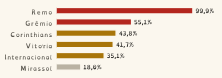
Hoje: Coritiba × Santos, 19h30 · Remo × Chape, 20h · Cruzeiro × Palmeiras e Fla × Athletico, 20h30 · Corinthians × Botafogo e Grêmio × Bahia, 21h30. Qui 19: Vasco × Inter e Vitória × Bragantino, 19h30 · São Paulo × Flu, 21h30.
Sáb 21, 20h: Atlético-MG × Boca, Sul-Americana, em Barranquilla. Sáb 28, 17h: Palmeiras × Estudiantes, Libertadores, em Montevidéu.
14 anos sem uma goleada tão grande da Seleção: desde o 8 a 0 na China, em setembro de 2012.
Fortaleza. A CBF divulgou na segunda (16) a tabela detalhada e a ida saiu do sábado. O Leão visita o Criciúma no domingo (22), às 16h, no Heriberto Hülse, e decide em casa no sábado (28), às 20h, na Arena Castelão. Não há pênaltis. Com a melhor campanha (4º, com 65 pontos, contra 62 do Criciúma), o Fortaleza sobe se o agregado terminar empatado. Quem vencer o confronto joga a Série A de 2027.
Ceará. O elenco se reapresenta em 15 de dezembro, no CT de Porangabuçu, e terá 21 dias de preparação até a estreia no Cearense, em 5/1, contra o Horizonte, no Domingão. O clube escapou da queda por um ponto, na pior campanha de sua história na Série B. Richardson, de 35 anos, chegou a 338 jogos e virou o 10º atleta que mais vestiu a camisa, empatado com Ricardinho. O contrato termina em dezembro e a renovação não está definida.
Sobral. O Vila Real empatou por 1 a 1 com o time de base do Ceará no domingo (15), no Presidente Vargas: Bruninho abriu e João Victor empatou. Com 7 pontos, o time sobralense segue líder do Grupo B. O Ceará é o 2º, com 4, e o Atlético Cearense ainda não pontuou. Hoje (18), às 19h, Ceará e Atlético-CE jogam no PV. O campeão da Taça Fares Lopes ganha vaga na Copa do Brasil de 2027. O Guarany não disputa o torneio; em 2027, ele e o Vila Real farão clássico na Série B estadual.
Nordeste na elite. O Bahia, 6º com 53 pontos, visita o Grêmio hoje, às 21h30, em busca de vaga continental. O Vitória, 15º com 38, recebe o Bragantino amanhã (19), às 19h30. A simulação do ValorFinal estima em 41,7% o risco de queda do time baiano.
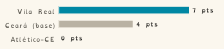
Sem pênaltis: empate no agregado favorece o mais bem colocado (Fortaleza e Vila Nova).
| Hoje | Ceará × Atlético-CE, 19h, PV Hoje |
| Hoje | Grêmio × Bahia, 21h30 |
| Qui 19 | Vitória × Bragantino, 19h30 |
| 15/12 | Reapresentação do Ceará |
| 5/1 | Começa o Cearense 2027 |
Venceu o 1º set, mas levou a virada do São José: 3 a 1, no Paulo Sarasate, pela 4ª rodada. É o penúltimo da Superliga. Próximo jogo: Sesi Bauru, fora, em 23/11.
Perdeu para o líder Minas por 77 a 63, em Belo Horizonte: 1 vitória em 7 jogos, 17º no NBB. O placar de segunda (16), contra o Cruzeiro, não foi confirmado.
As Aliadas de Sobral, time comunitário feminino criado em 2025, venceram a Taça das Favelas Ceará em 31/10: 1 a 0 sobre o União Coaçu, gol de Naiara.
Copenhague. Na terça (17), a Dinamarca abriu 2 a 0 em 14 minutos. Haaland descontou, Ødegaard empatou aos 38 do 2º tempo e, nos acréscimos, Haaland cobrou o pênalti dado pelo VAR por mão de Joachim Andersen: Dinamarca 2 × 3 Noruega. Empatadas com 9 pontos, a Noruega avança pelo confronto direto.
Cardiff. Portugal venceu Gales por 3 a 2 e fechou o grupo em 1º, com 15 pontos. Bruno Fernandes abriu, Gales virou, Pedro Neto empatou e Carlos Forbes decidiu. Neto foi expulso com o segundo amarelo.
Quartas. Na rodada final, a Alemanha fez 5 a 0 na Holanda e a Bélgica, 4 a 1 na Itália, que ficou fora. O sorteio é na sexta (20), em Nyon; os jogos, de 25 a 30 de março de 2027. A Espanha chega como campeã do mundo: 1 a 0 na Argentina, na prorrogação, em 19 de julho.
F1. Kimi Antonelli, da Mercedes, é campeão desde o GP do México e, aos 20 anos, o mais jovem da história; a equipe também levou o título de construtores. Gabriel Bortoleto (Audi) é o 14º, com 14 pontos. A Haas confirmou na segunda (16) Rafael Câmara em Las Vegas, ao lado de Bearman. O brasileiro, titular da equipe em 2027, ainda briga pelo título da Fórmula 2.
MotoGP. Em Portimão, de sexta a domingo, Marc Márquez (431 pontos) pode fechar o 8º título na categoria principal; Jorge Martín soma 371.
Tênis. Em Turim, Zverev bateu Shelton por 6/2 7/6 e está na semifinal sem perder sets; Arthur Fils eliminou Rafael Jódar. A Copa Davis será de 24 a 29/11, em Bolonha, com oito países. O Brasil não está entre eles.
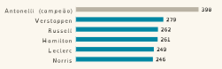
| Qui 19 | Treino livre 1 · 21h30 |
| Sex 20 | TL2 · 1h · TL3 · 21h30 |
| Sáb 21 | Classificação · 1h |
| Dom 22 | Corrida · 1h · Globo |
Todas as sessões: SporTV 3 e Globoplay. Depois: Catar (29/11) e Abu Dhabi (6/12).
1ºs: França, Alemanha, Inglaterra e Portugal. 2ºs: Bélgica, Holanda, Espanha e Noruega. Líder de grupo pega um 2º de outro grupo.
Em Bolonha, quadra dura coberta: Itália (sede), Espanha, Alemanha, Grã-Bretanha, Tchéquia, Áustria, Canadá e Coreia do Sul.
Atlético-MG × Boca, Sul-Americana, às 20h, em Barranquilla. Libertadores: 28/11.
96: o minuto do pênalti de Haaland que classificou a Noruega.
Corrida à 1h? Veja o compacto de manhã. Sono vale mais que um treino livre.
Superliga Feminina. Na terça (17), o Sesc RJ Flamengo venceu o Sesi Bauru por 3 sets a 0, em Bauru, e encerrou a invencibilidade do rival. Com seis vitórias em seis jogos e 18 pontos, o time carioca é o novo líder. Mais cedo, o Minas bateu o Fluminense por 3 a 0 no Rio (25/18, 25/16 e 25/17) e também segue invicto, com 17. O Sesi Bauru caiu para 3º, com 17 pontos e uma derrota. Praia Clube e Osasco, com 12, completam o pelotão de cima.
Superliga Masculina. Na 4ª rodada, no sábado (14), o São José virou sobre o cearense Norde Vôlei, em Fortaleza (veja a pág. 13).
Lutas. No UFC 334, no sábado (14), no Madison Square Garden, em Nova York, Kayla Harrison finalizou Amanda Nunes e manteve o cinturão peso-galo. Na luta principal, Ciryl Gane venceu Josh Hokit por decisão e manteve o título dos pesados. Entre os brasileiros, Caio Borralho venceu o holandês Yousri Belgaroui por decisão unânime, sua 19ª vitória na carreira. Cesinha Almeida (nocaute no 1º round), Melk Costa e Bia Mesquita também venceram; Samuel Sanches perdeu.
Seleção feminina. Arthur Elias leva o grupo para os dois últimos amistosos do ano, contra o Japão: domingo, 29/11, em Hiroshima, e sábado, 5/12, em Okayama. Kerolin está fora por lesão no pé. Marta não foi chamada, mas, segundo o técnico, segue nos planos para a Copa do Mundo de 2027, no Brasil. O calendário nacional das mulheres já terminou: São Paulo (Brasileirão A1), Cruzeiro (Libertadores) e Inter (Copa do Brasil) foram campeões inéditos.
Basquete. No NBB, o Minas Storm lidera e venceu o Basquete Cearense por 77 a 63 no sábado (14), em Belo Horizonte.
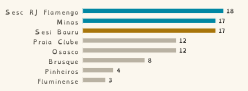
| 1 | Sesc RJ Flamengo | 6-0 |
| 2 | Minas | 6-0 |
| 3 | Sesi Bauru | 6-1 |
| 4 | Praia Clube | 4-1 |
| 5 | Osasco | 4-1 |
Vitórias e derrotas. O Fluminense tem um jogo adiado.
Cinturões mantidos por Harrison (galo) e Gane (pesado). Venceram Borralho, Cesinha, Melk Costa e Bia Mesquita.
Seg 23/11: Sesi Bauru × Norde, Superliga Masculina. Dom 29/11: Japão × Brasil, em Hiroshima. Sáb 5/12: Japão × Brasil, em Okayama.
18 de 18: o Sesc RJ Flamengo somou todos os pontos possíveis nas seis primeiras rodadas.
Vôlei feminino no fim de tarde cabe melhor na rotina do que jogo de madrugada: dá para assistir junto e dormir no horário.
24 h GTA VI. Sai na quinta (19) só para PS5 e Xbox Series X|S. Na loja da Microsoft, a edição Standard custa R$ 449,90 e a Ultimate, R$ 549,90; a imprensa relata o mesmo valor da Standard na PlayStation Store. No Xbox Cloud Gaming, que leva o jogo ao Xbox One, a liberação é às 3h de Brasília. Não há data para PC.
Críticas. O fim do embargo é esperado para hoje, segundo o insider NateTheHate e o site Insider Gaming; a Rockstar não confirmou. Na segunda, uma nota de usuários de 6,5, com só cinco avaliações e nenhum texto, apareceu e sumiu do Metacritic. Não era nota da crítica.
Também na semana. Goat Simulator 3 ganha a expansão Ticket to Dizzyworld (19/11), e The Binding of Isaac: Repentance+ chega ao Switch 2 no mesmo dia.
Sáb 21 BepiColombo. A missão da ESA com a agência japonesa JAXA, lançada em outubro de 2018, faz no sábado a queima de captura na órbita de Mercúrio. Os dois orbitadores se separam em 9 e 10/12 e a ciência começa em abril de 2027. A ESA diz que os instrumentos ligados em setembro estão em boas condições.
Céu Leônidas. O pico foi na noite de ontem, mas a chuva segue ativa até o fim do mês, com menos riscos. Melhor janela: madrugada, longe das luzes.
Hoje Mickey, 98. Steamboat Willie foi um dos primeiros desenhos com som sincronizado. Essa versão do personagem entrou em domínio público nos EUA em 1º/1/2024.
| Hoje | Críticas do GTA VI (prev.) |
| Qui 19 | GTA VI · estreias no cinema |
| Sáb 21 | BepiColombo em Mercúrio |
| Dom 22 | F1 em Las Vegas |
| Seg 23 | Ariane 6 com 36 satélites |
| Sex 27 | Black Friday |
O sistema de dopamina reage à expectativa da recompensa, não só a ela. Por isso a véspera de um lançamento pesa tanto.
Embargo: data e hora combinadas antes das quais a imprensa não pode publicar a crítica.
Em Mercúrio, um dia solar dura 176 dias terrestres: o dobro do ano do planeta, que tem 88.
Jogos Vorazes: Amanhecer na Colheita, com Haymitch jovem; Eu Sou o Rocky, sobre o início de Stallone; e o épico indiano Ramayana.
3ª temporada de Percy Jackson (Disney+), a cinebiografia Madden (Prime Video) e a série brasileira Os 12 Signos de Valentina (Netflix).
Combustíveis. No levantamento da ANP de 8 a 14/11, a gasolina comum ficou em R$ 6,48 na média nacional, estável. O etanol passou de R$ 4,15 para R$ 4,25, e o diesel S10 ficou em R$ 7,29. No Ceará, a gasolina custou R$ 6,91 e o etanol, R$ 4,95. Em Sobral, a pesquisa visitou só oito postos: gasolina a R$ 7,08, R$ 0,60 acima da média do país, e etanol a R$ 5,34.
Recalls. 24 hA Ford convocou a Ranger 2026 e 2027 sem câmera de ré de fábrica: a tela de 10,1" pode apagar e sumir com a imagem da ré. O reparo gratuito começa no 1º trimestre de 2027. 72 hA Volvo chamou o EX30 (2024 a 2027): a almofada do apoio de cabeça pode se soltar. O atendimento começa em 23/12.
Mais vendidos. Até 14/11, a Fiat Strada liderou com 5.767 emplacamentos. O elétrico BYD Dolphin Mini foi o 4º, e entre os híbridos o GWM Haval H6 somou 2.094 na quinzena, segundo a JATO.
Argo X. 24 hO hatch é feito em Betim (MG), tem seis airbags de série e versão turbo com híbrido leve. A imprensa estima de R$ 90 mil a R$ 120 mil: a Fiat ainda não divulgou a tabela.
Trânsito. No Dia em Memória das Vítimas (15/11), o Ministério da Saúde contava 37.150 mortes em 2024, 41,6% delas em motos.
IPVA 2027. O Ceará ainda não publicou o calendário. Os pontos do Sua Nota Tem Valor contam até 30/11 e dão até 5% de desconto, limitado a R$ 1 mil.
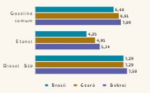
| Brasil | 66% | etanol compensa |
| Fortaleza | 71% | empate técnico |
| Ceará | 72% | gasolina |
| Sobral | 75% | gasolina |
Referência usual: até 70%, etanol. Seu consumo real manda. Conta do jornal com dados da ANP.
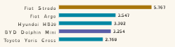
Custo total por mês = parcela + seguro + IPVA + combustível + revisão. Rodar 1.000 km a 10 km/l em Sobral custa cerca de R$ 708 só de gasolina.
Seguro e revenda: faça a cotação do seguro antes de assinar e pesquise quanto o modelo perde de valor em 3 anos. Ele quase sempre perde.
Regra das 72 h: nada de assinar no dia do test drive. Durma três noites, refaça a conta e confira o recall pelo chassi no gov.br.
"TV 65 polegadas lacrada, de R$ 4.000 por R$ 1.200. Só Pix. Últimas 3!"
✔ Preço irreal + só Pix + pressa = 3 sinais da lista da Febraban.
"Consórcio já sorteado, crédito em 48 h. Pague só a taxa de transferência."
✔ Consórcio não garante data. Confira se a administradora tem autorização do Banco Central.
"Seu processo foi ganho. Para liberar o valor, pague as custas por Pix hoje."
✔ Ligue para o advogado pelo número que você já tem. O TJCE orienta usar só canais do portal.
"Compra suspeita no seu cartão. Instale nosso app de proteção."
✔ Banco não pede app de acesso remoto. Desligue e ligue para o número do verso do cartão.
"Quite sua fatura com 40% off. Boleto em anexo."
✔ Segunda via, só no app. Antes de pagar, confira o nome do beneficiário.
"Oi, troquei de número. Me faz um Pix urgente?"
✔ Ligue para o número antigo. Ative a verificação em duas etapas do WhatsApp.
Lojas de fachada. 72 hEm nota divulgada no domingo (16), a Febraban descreveu lojas falsas que pagam por avaliações, usam fotos de bancos de imagens e impulsionam posts. Sinais: preço muito abaixo do comércio e pressa.
Menos tentativas. 72 hNo índice da Equifax BoaVista, outubro teve a primeira queda após três meses de alta: a taxa caiu de 1,42% para 1,33% das transações.
Falso advogado. ContextoNo Paraná, uma idosa perdeu cerca de R$ 2 milhões. A investigação levou a uma operação no Ceará, com 32 mandados.
Acima de R$ 200, anote o preço hoje, espere três noites e só então decida. Oferta que "acaba em 1 hora" é a que mais pede pausa.
Avise o banco na hora e peça o MED, registre boletim de ocorrência e guarde prints, comprovantes e conversas.
| Item | Veredito | Por quê |
|---|---|---|
| GTA VI (R$ 449,90, Standard) | ⏳ Decidir após as críticas | As críticas devem sair hoje. Versão digital não esgota: compre só na loja do console, se ainda fizer sentido. |
| Upgrade Ultimate (R$ 100) | ⏳ Esperar | Pode ser comprado depois, a qualquer momento. Primeiro veja se você vai mesmo jogar. |
| Plano de nuvem do WhatsApp | ⏳ Esperar | Ainda em teste e sem preço divulgado. Veja antes o tamanho do seu backup: 2 GB grátis podem bastar. |
| TV ou celular "70% off" antes do dia 27 | 📝 Preparar lista | Print hoje, com frete e prazo. Compare em 27/11 com a mínima dos últimos 90 dias. |
| Link de promoção por SMS ou WhatsApp | 🔴 Não clique | Entre pelo app ou digite o endereço da loja. No Pix, confira o nome do recebedor no app do banco. |
Avise o banco na hora. O Mecanismo Especial de Devolução (MED) permite pedir o dinheiro de volta em até 80 dias da transação, segundo o Procon-MPMG.
Contador regressivo e "últimas unidades" criam urgência artificial, que pesa mais para quem tem TDAH. Se a oferta exige decidir em minutos, a resposta é não.
Anúncio, preço, prazo e conversas. A nota fiscal não é a única prova.
Vício aparente: 30 dias para reclamar em não duráveis e 90 em duráveis (CDC, art. 26).
Versão de teste pode travar app de banco ou de prescrição. No celular do plantão, só a final.
O dia. Na manhã de terça (17/11), o Tesouro Prefixado 2029 pagava 14,98% ao ano e o 2032, 15,35%; o IPCA+ 2032, IPCA + 7,78%, segundo o InvestNews. As taxas recuaram após a alta de segunda, mas seguem perto das máximas desde 2004, com dúvidas sobre o ajuste fiscal.
A tentação. Taxa alta vira manchete e dá vontade de "travar o juro histórico" com tudo. O Pequeno Manual do site Bastter.com ensina o contrário: esquecer a hora certa de entrar ou sair. A pessoa define um percentual fixo de renda fixa no patrimônio e aporta todo mês, conforme o balanceamento indicar.
Os pilares. Patrimônio não se gira, se acumula. A renda do trabalho é a renda verdadeira: o foco é trabalhar bem, gastar menos do que ganha e aportar com regularidade. Renda fixa não produz renda; tenta preservar o poder de compra, e gastar os juros corrói o principal.
Marcação a mercado. Prefixado e IPCA+ mudam de preço todo dia útil. Se os juros sobem após a compra, o título vale menos no extrato; a taxa contratada só é garantida a quem fica até o vencimento. Por isso o prazo do título deve casar com a data do objetivo. Para dinheiro de uso imediato, há o Tesouro Selic e o Tesouro Reserva (100% da Selic).
Os números. O Copom manteve a Selic em 13,75% em 4/11 e decide de novo em 9/12; o Focus de 16/11 aponta manutenção e 12,75% no fim de 2027. Com a Selic acima de 8,5%, a poupança paga 0,5% ao mês mais TR: 8,25% em 12 meses até novembro. O IR da renda fixa segue regressivo: 22,5% até 180 dias, 20% até 360, 17,5% até 720 e 15% depois.
O que fica de fora. A filosofia Bastter inclui ações de longo prazo; este jornal não trata desse tema. Quem quiser conhecê-lo deve ler a fonte original e falar com um profissional certificado.
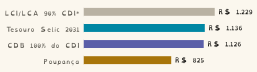
| Selic 2031 | Selic + 0,1083% |
| Prefixado 2029 | 14,98% ao ano |
| Prefixado 2032 | 15,35% ao ano |
| IPCA+ 2032 | IPCA + 7,78% |
Taxas mudam todo dia útil: confira no site oficial do Tesouro Direto.
FGC: poupança, CDB, LCI e LCA até R$ 250 mil por CPF e instituição; teto de R$ 1 milhão a cada 4 anos. Tesouro: garantia do Tesouro Nacional. LCI/LCA: isentas de IR para pessoa física; carência de 6 meses (com IPCA: 36 na LCI, 12 na LCA).
Juro sobe, preço cai; juro cai, preço sobe. No vencimento, vale a taxa contratada.
Trabalhe bem, gaste menos do que ganha, aporte todo mês e não tente acertar a hora.
Taxa "histórica" e Black Friday (27/11) pedem pressa. Espere três dias e fale com alguém de confiança.
O caso. Em 17/11, a Polícia Civil de São Paulo cumpriu mandados em sete endereços na Operação Venatio Umbrae, contra um esquema de leilões falsos de veículos com prejuízo acima de R$ 1 milhão e 72 boletins de ocorrência. Uma vítima perdeu mais de R$ 60 mil ao "arrematar" um carro em site falso. Em 11/11, a polícia de Minas tirou do ar outro site do tipo.
Leiloeiro de verdade. O leiloeiro oficial tem matrícula na Junta Comercial do estado (Decreto 21.981/1932), que publica a lista; no Ceará, a Jucec. A comissão vem no edital. Pegue telefone e site na Junta, não no anúncio.
Imóvel e terreno. O edital diz se o imóvel está ocupado, quem paga IPTU e condomínio atrasados e em que estado está o bem. Some comissão, ITBI e registro. Só é dono quem registra no Cartório de Registro de Imóveis (Código Civil, art. 1.245). Em terreno, peça a matrícula com ônus e confira se o loteamento é registrado (Lei 6.766/1979).
Veículo, com honestidade. Carro é consumo: perde valor todo ano e cobra seguro, IPVA, manutenção e combustível. No leilão, parte dos carros vem de financiamento retomado ou de sinistro, o que pode encarecer o seguro e dificultar a revenda.
Revenda. Comprar para revender é comércio: formalize e confira no Portal do Empreendedor se a atividade cabe no MEI. Em 2026, o teto é R$ 81 mil; a LC 238/2026 o eleva a R$ 110 mil em 2027 e R$ 140 mil a partir de 2028, e permite até dois empregados a partir de 2027. Emita nota; o cliente tem 90 dias para reclamar de defeito em bem durável (CDC, art. 26). Comprar bem com preço desproporcional pode ser receptação, mesmo sem intenção (Código Penal, art. 180, § 3º).
Junta Comercial (Jucec, no Ceará): lista de leiloeiros. Registro.br: data de criação de sites .br. Registrato (BC): contas e empréstimos no seu CPF. BC Protege+: bloqueia abertura de contas em seu nome. Consumidor.gov.br: reclamações.
Urgência, escassez e preço irreal. Antídoto: 72 horas, edital lido e uma pessoa de confiança antes de qualquer Pix.
Edital inteiro · matrícula atualizada · ocupação · dívidas de IPTU e condomínio · advogado antes do lance.
Origem (retomado ou sinistro) · débitos · laudo cautelar · tabela Fipe · cotação do seguro antes do lance.
Avise o banco na hora, registre boletim de ocorrência e guarde prints e comprovantes.
O dólar fechou a terça (17/11) em R$ 5,78, alta de 0,09%, depois de bater R$ 5,81 pela manhã; perdeu força com o avanço do ajuste fiscal no Senado, segundo o BB Investalk.
O texto-base do ajuste fiscal passou no Senado por 45 a 31 em 12/11. Em 17/11, a votação dos destaques foi adiada para hoje, a pedido do relator. Depois, o projeto vai à Câmara.
O Brent caiu 3,55% na segunda (16/11), a US$ 92,44, porque os embarques por Ormuz voltaram mais rápido que o esperado (BPMoney), apesar de novos incidentes com navios.
Flamengo (76) recebe o Athletico hoje, às 20h30; na mesma hora, o Palmeiras (73) visita o Cruzeiro. Os líderes se enfrentam no sábado (21). GTA VI sai amanhã (19) para PS5 e Xbox, a R$ 449,90 na edição padrão; a caixa física não traz disco. A Nvidia faturou US$ 115,8 bi no trimestre (+103%) e projeta US$ 130 bi (17/11).
Duas telas dividem a atenção e esticam a noite. Antes de ligar o jogo, combine a hora de desligar.
A receita. O Bald's Leechbook, manuscrito anglo-saxão do século X guardado na Biblioteca Britânica, ensina um remédio para um provável terçol: alho, cebola ou alho-poró, vinho e bile de boi, deixados nove dias e nove noites num vaso de latão e depois coados.
O teste. Em 2015, a microbiologista Freya Harrison e a especialista em inglês antigo Christina Lee, da Universidade de Nottingham, refizeram a mistura (revista mBio). Num biofilme que imita ferida, a versão de nove dias derrubou o S. aureus em 4 a 5 log; cada ingrediente sozinho não fez efeito. Em feridas de camundongo com MRSA, matou cerca de 90% em 4 h. Mas o mecanismo é desconhecido, os lotes variaram e nada foi testado em gente: é pista de pesquisa, não colírio caseiro.
O mofo. Pão mofado sobre feridas aparece em relatos populares, sem dose, sem saber que fungo cresce e com risco de toxinas. Em 1928, Alexander Fleming viu um Penicillium contaminante barrar estafilococos numa placa. Em Oxford, a partir de 1940, Florey e Chain fizeram dele remédio; os três dividiram o Nobel de 1945.
O aviso. Ainda em 1940, antes do primeiro paciente, Abraham e Chain descreveram uma enzima bacteriana que destrói a penicilina. No discurso do Nobel, Fleming alertou que doses baixas selecionam micróbios resistentes. No Brasil, desde 2010 a farmácia só vende antibiótico com receita retida.
| Ideia | Hoje |
|---|---|
| Mistura de Bald matou MRSA | ✅ Em laboratório e camundongo |
| Serve de colírio hoje | 🔴 Nunca testada em pessoas |
| Pão mofado cura ferida | 🔴 Fungo incerto, risco de toxina |
| A penicilina veio de um mofo | ✅ Penicillium, 1928 |
| Reza e benzeção confortam | 🟡 Apoio; não substitui tratamento |
| Antibiótico cura gripe | 🔴 Vírus não responde |
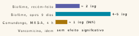
Com ramos e orações, de graça, rezadeiras tratam o que chamam de quebranto, mau-olhado e espinhela caída. Em Sobral, benzedeiras chegaram a ser incorporadas ao sistema de saúde como "agentes não formais de cura", segundo dissertação de 2009 citada na Saúde em Debate (2020). Nesse estudo, feito com equipes de Saúde da Família em Minas Gerais, a benzedeira encaminha à unidade quando a reza não basta. A Sé de Sobral é dedicada a Nossa Senhora da Conceição, festejada em 8 de dezembro.
O líder. Jim Jones fundou o Templo do Povo nos EUA nos anos 1950. Em 1962–63 morou em Belo Horizonte, depois de ler numa revista uma lista de "nove lugares para se esconder" de uma guerra nuclear: o medo da Guerra Fria o trouxe ao Brasil. Nos anos 1970, levou centenas de seguidores para a Guiana.
O dia. Em 18/11/1978, após uma visita de inspeção, o deputado americano Leo Ryan, três jornalistas e uma integrante que tentava sair foram mortos a tiros numa pista de pouso. No assentamento, a equipe médica preparou um veneno. Morreram 909 pessoas, 304 delas com menos de 18 anos; outras quatro, em Georgetown. Só sete autópsias foram feitas; 85 integrantes sobreviveram.
O controle. Segundo o arquivo da Universidade Estadual de San Diego, Jones filtrava as notícias e as lia nos alto-falantes; dissidentes eram sedados; havia trabalho forçado, guardas contra fugas e ensaios de morte coletiva chamados de "testes de lealdade".
Memória. Crianças não escolhem, e muitos adultos foram coagidos; por isso se fala em massacre, não em "suicídio coletivo". Hipótese: a selva servia para afastar parentes e imprensa.
Em Oakland (EUA), mais de 400 corpos não identificados ou não reclamados estão numa vala comum. Desde 2011, um memorial grava ali 918 nomes, inclusive o de Jones, o que gerou processo. Lembrar é nomear as vítimas.
Inspirado no modelo BITE, do psicólogo Steven Hassan: triagem, não diagnóstico. Pensamentos de morte: CVV, 188, 24 h.
Carisma: do grego kháris, "graça, dom"; Weber o usou para o poder que nasce da devoção ao líder. Seita: do latim secta, "linha seguida".
| 18/11 | Basílicas de S. Pedro e S. Paulo |
| 20/11 | Consciência Negra |
| 22/11 | Cristo Rei · Santa Cecília |
| 29/11 | 1º domingo do Advento |
Hoje A Índia celebra o 9º Dia Nacional da Naturopatia ("terapia natural, Índia saudável"); o Ministério Ayush promete "pesquisa crível". Contexto A Estratégia Global de Medicina Tradicional 2025–2034 da OMS, aprovada em 2025, pede evidência e regulação de segurança; o centro global da OMS no tema fica na Índia. A CID-11 ganhou em 2024 um módulo com ayurveda, siddha e unani. No SUS, a política de práticas integrativas (2006) reúne 29 práticas.
1. Em que cidade brasileira Jim Jones morou em 1962–63? 2. Quantos menores de 18 anos morreram em Jonestown? 3. Que remédio medieval foi testado contra MRSA em 2015 (p.24)? Respostas: Belo Horizonte · 304 · o colírio do Bald's Leechbook.
✝️ Bíblia · Tiago 1:19 e Provérbios 18:21
"Seja cada um pronto para ouvir, tardio para falar, tardio para se irar." · "A morte e a vida estão no poder da língua."
Reflexão: a ordem importa: ouvir vem primeiro, a raiva por último. Tiago 3:5 compara a língua a uma faísca que incendeia a floresta. Hoje: na próxima conversa tensa, deixe o outro terminar a frase.
✡️ Torá · Levítico 19:16 e Números 12:3
"Não andes espalhando mexericos no meio do teu povo." · "Moisés era muito humilde, mais que todos os homens da terra."
Reflexão: o maior líder da Torá é descrito pela humildade, não pela força. E o mesmo versículo do mexerico manda não ficar parado diante do perigo do próximo. Hoje: ouviu fofoca? Não repasse.
📜 Talmude · Bava Metzia 58b e Arachin 15b
"Quem faz o rosto do próximo empalidecer em público é como quem derrama sangue."
Reflexão: os sábios notaram que o humilhado fica branco, como se perdesse sangue. E ensinam que a maledicência fere três: quem fala, quem ouve e de quem se fala. Hoje: corrija só em particular.
☪️ Alcorão · Suratas 49:11–12 e 31:18–19
"Não zombeis uns dos outros nem vos difameis." · "Não vires o rosto às pessoas com desdém; modera o passo e baixa a voz."
Reflexão: a surata 49 compara falar mal do ausente a comer a carne do irmão morto. Luqman ensina ao filho que a humildade aparece no tom de voz. Hoje: fale mais baixo quando a conversa esquentar.
☯️ Confúcio · Analectos 4:24 e 1:3
"O nobre quer ser lento no falar e ágil no agir." · "Palavras enfeitadas e cara de agrado raramente andam com a bondade."
Reflexão: em 2:13 ele completa: faça primeiro e só depois fale do que fez. Prometer menos e entregar mais é humildade na prática. Hoje: troque um "vou fazer" por um "fiz".
☸️ Budismo · Majjhima Nikaya 58 e Dhammapada 133
"Dizer só o que é verdadeiro, útil e no momento certo." · "Não fales com aspereza: quem ouve responderá do mesmo jeito."
Reflexão: a fala correta é um dos oito passos do caminho. O Buda separa o verdadeiro do útil e do oportuno: a verdade dita na hora errada também fere. Hoje: é verdade? ajuda? é a hora?
Que frase sua de ontem você gostaria de não ter dito? Hoje, uma frase a menos e uma pergunta a mais.
Do latim humilitas, de humus, "terra, chão". Humilde é quem tem os pés no chão, não quem se rebaixa. A mesma raiz antiga deu homo, "homem".
Silêncio protege: Pirkei Avot 1:17 e 3:13 ("cerca da sabedoria é o silêncio"), Pv 17:28. Não humilhar: Bava Metzia 58b, Alcorão 49:11. Fala boa ou silêncio: hadith 15 de Nawawi.
| Estudo | O que mostrou | Lição |
|---|---|---|
| McDonagh et al., Crit Care Med 2004 | 51 reuniões gravadas em UTIs de Seattle: clínicos falaram 71% do tempo, famílias 29%. Mais fala da família, mais satisfação e menos conflito. | Pergunte e escute |
| Lautrette et al., NEJM 2007 | 126 pacientes em 22 UTIs francesas: reunião proativa, com a família falando 14 min (contra 5) e folheto sobre luto, reduziu sintomas emocionais aos 90 dias. | Mais tempo para eles |
| Riskin et al., Pediatrics 2015 | 24 equipes de UTI neonatal em simulação: comentários levemente rudes de um observador pioraram diagnóstico e procedimentos; a grosseria explicou cerca de 12% da variação. | Não humilhar |
| Starmer et al., NEJM 2014 | I-PASS em 9 hospitais, 10.740 internações: erros médicos −23%, eventos adversos evitáveis −30%, sem alongar a passagem (2,4 vs 2,5 min por paciente). | Passagem estruturada |
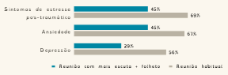
Em julho de 1863, depois de Gettysburg, Abraham Lincoln escreveu ao general Meade uma carta dura por deixar o inimigo escapar. Guardou-a; no envelope ficou anotado que nunca foi enviada nem assinada. Gandhi reservava as segundas-feiras ao silêncio e, quando precisava, respondia por bilhetes.
Atenção: os "três filtros de Sócrates" (é verdade? é bom? é útil?) circulam na internet, mas não aparecem em nenhum texto antigo. A ideia é boa; a autoria é lenda.
🧠 Recuperação ativa: 1. Quanto do tempo os clínicos falaram nas reuniões com família em Seattle? 2. O que significa o "L" de VALUE? 3. Que tratado compara humilhar em público a derramar sangue? Respostas: 71% · Listen, escutar · Bava Metzia 58b.
Cochilo. Em 24 adultos que dormiram cerca de 5 horas, o cochilo de 10 minutos melhorou na hora alerta, humor e desempenho, por até 155 minutos; o de 30 trouxe antes a inércia do sono (Brooks e Lack, 2006). Numa revisão de 13 estudos com trabalhadores noturnos, o cochilo no turno reduziu a sonolência (Ruggiero e Redeker, 2014).
Fôlego. Num ensaio de Stanford, 5 minutos diários de suspiro cíclico, com expiração longa, melhoraram mais o humor e a frequência respiratória do que 5 minutos de meditação (Balban et al., 2023). Respirar abaixo de 10 vezes por minuto se liga a maior variabilidade cardíaca (Zaccaro et al., 2018).
Papel. Em 54 estudos com mais de 170 mil leitores, o papel venceu a tela na compreensão de textos informativos (Delgado et al., 2018). Ler no tablet antes de dormir, contra o livro impresso, atrasou o sono e reduziu a melatonina (Chang et al., 2015).
Silêncio. No Johns Hopkins, nenhum setor cumpria a meta da OMS para hospitais, de 30 a 35 dB: as médias iam de 50 a 60 dB, e muitas unidades quase não silenciavam à noite (Busch-Vishniac et al., 2005).
Caráter. O baiano Juliano Moreira, médico negro, dirigiu o Hospício Nacional de Alienados por 27 anos desde 1903: aboliu camisas de força e grades. Luiz Gama, escravizado na infância e advogado autodidata, libertou mais de 500 pessoas na Justiça.
| Cochilo de 10 a 20 min melhora o alerta | ✅ |
| Cochilo no turno da noite | 🟡 |
| Expiração longa acalma | 🟡 |
| Papel ajuda no texto técnico | ✅ |
| Tela à noite atrasa o relógio | ✅ |
| Copo d'água sob a cama "absorve energias" | ✨ |
Sonolento não dirige: cochilo de 15 minutos antes. Oculos escuros no caminho 🟡. Nada de tela na cama. Obscuridade e silêncio no quarto. Regra prática do jornal; siga o protocolo institucional de descanso.
| Cochilo | Efeito no estudo |
|---|---|
| 5 min | Quase nenhum |
| 10 min | Na hora, por até 2h35 |
| 20 min | Após 35 min, até 2h05 |
| 30 min | Lentidão antes, depois até 2h35 |
Adultos jovens após noite de ~5 h, cochilo às 15h. Fonte: Brooks e Lack, Sleep 2006.
O hiperfoco da noite rouba o sono. Alarme "desligar telas" 1 hora antes de deitar, carregador fora do quarto e um livro de papel na cabeceira. 🟡 Estratégia prática.
Tradição cultural e simbólica (astrologia tropical), sem valor preditivo em teste duplo-cego (Nature, 1985): lembrete de atitude, nunca decisão. No céu real, a Lua está em Aquário e o Sol, em Libra.
| Planta | Crença ✨ | O que se sabe |
|---|---|---|
| Dormideira | Pudor | "Aprende" a ignorar toque inofensivo e lembra por semanas (2014) |
| Tomateiro | Fartura | Com sede, emite estalos ultrassônicos (Cell, 2023) |
| Mandacaru | Flor traz chuva | Abre à noite; previsão não comprovada |
Em Ajustes › Foco › +, crie um Foco personalizado "Plantão": libere só ligações de favoritos e apps do hospital. Dá para programar por horário.
Ative em Configurações › Sistema › Área de transferência. Win + V mostra os últimos itens copiados; fixe os textos que você repete toda semana.
Em Configurações › Conta › Confirmação em duas etapas, crie um PIN. Quem clonar o chip não ativa sua conta sem ele.
O atributo alt descreve a imagem para leitores de tela (WCAG 1.1.1). Diga o que o gráfico mostra, não "imagem1.png".
A IA rascunha casos e flashcards; você confere na diretriz, cita as fontes, não usa dado de paciente e vende como material de estudo, sem prometer aprovação.
Escolha um assunto (hoje, PAV) e marque 25 min no relógio. Celular em outro cômodo. Acabou o tempo, pausa de 5 min em pé.
Antibiótico com critério: cultura antes e 7 dias quando o paciente melhora, na PAV e na ITU. Fora da UTI, "dica quente" pede regra das 72 h.
Hoje, em 5 minutos, escolha um paciente em antibiótico e anote: dia de tratamento, resultado da cultura e data prevista para parar.
Tratar bacteriúria sem sintoma · macrolídeo ou quinolona sem olhar o QTc · ignorar lesão de pele com febre · lance sem conferir o leiloeiro.
Jornal Diário 360 · Radar 360 Circunstancial · Ano I, nº 013 · fechamento em 18/11/2026, de madrugada, antes da sessão do Senado e do jogo do Flamengo. Produzido pelo Agente Editorial 360 com o Claude (Anthropic). Atualizações nas p.2 e 13. Nesta edição: esportes ampliados (p.12–15), educação financeira sem renda variável (p.20–21), tirinhas com personagens próprios (p.22–23), Arcanos (p.24–25), Honra 360 e Equilíbrio 360 (p.26–29), com traduções livres e referências para conferir. Em saúde, siga o protocolo institucional; em finanças e compras, não há recomendação nem comissão. Gráficos e ilustrações originais; nenhuma foto de terceiros. Texto em OpenDyslexic.